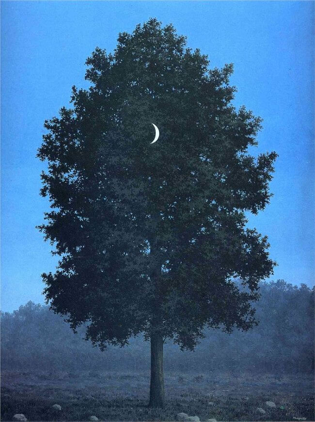

Here Magritte superimposes a crescent moon in front of the tree. The artist referred to his intentional juxtaposition of incongruous objects as "objective stimulus." In reference to this image, Magritte observed: "I have just painted the moon on a tree in the grey-blue colors of evening." Typically, the titles of Magritte's paintings were determined after they were completed. In this case, the title was the idea of Magritte's friend, Surrealist poet Louis Scutenaire. Unstable building, the artist seeks to subvert the laws of physics, as well as to question the viewer's perception of an image so deeply rooted in common culture.
